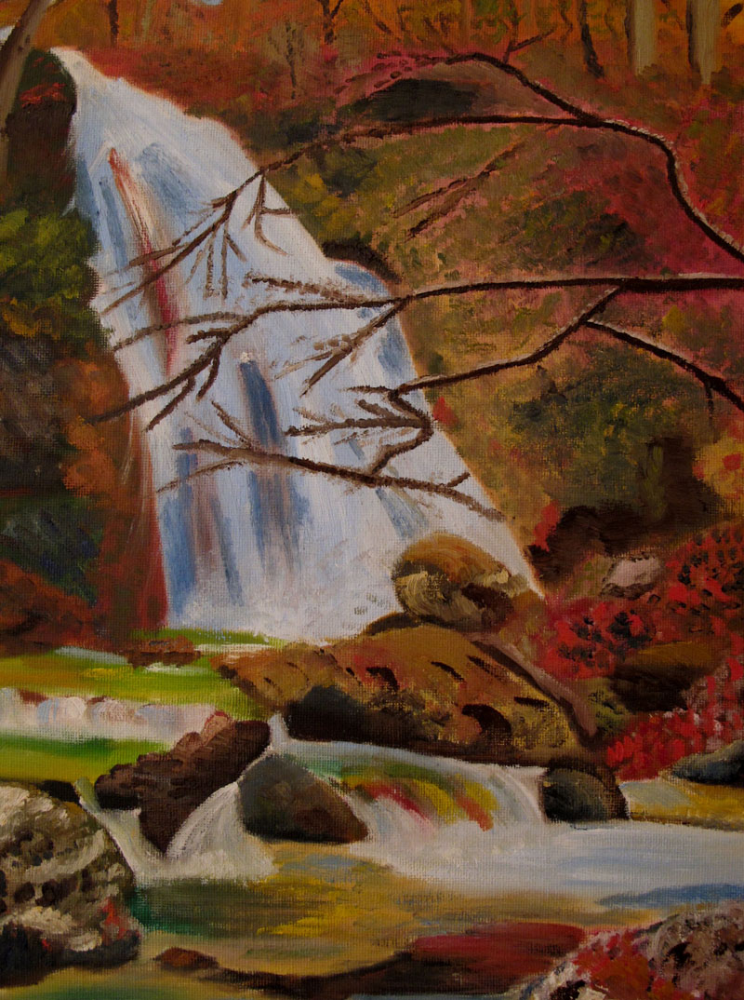
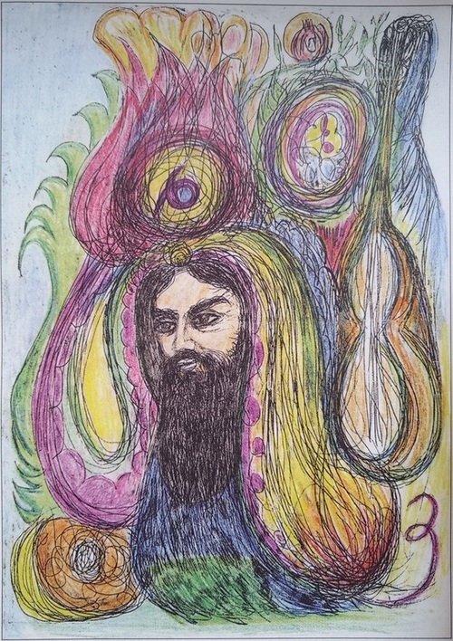
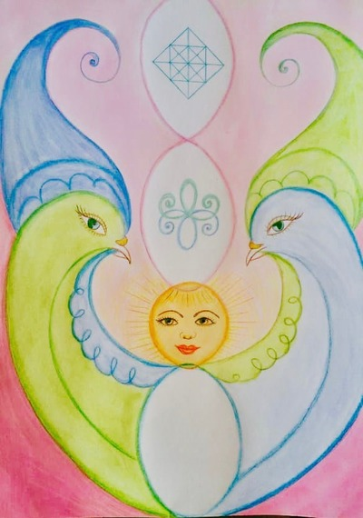

Статьи по альтернативной
психологии
Результаты применения методов Альтернативной психологии для коррекции фазового состояния г. Волгограда

В 2004 г. жители Волгограда, знакомые с новой наукой Альтернативной психологией, обратились к доктору Яшару Ибадову с просьбой создать фазовый портрет (ФП) их легендарного города на Волге. К этому времени методы АП (психография, психургия, Фазовый портрет- систем) были успешно апробированы в индивидуальной работе с пациентами. АП изучает «метаморфозные признаки живых организованных систем, их взаимосвязь с окружающим миром во времени и пространстве» [1, с. 5]. Методы АП позволяют исследовать, диагностировать и корректировать характер взаимодействия человека с окружающей средой на информационно- энергетическом уровне.
Читать дальше
ФАЗОВЫЙ ПОРТРЕТ КАК ПОСОБИЕ В РАЗВИТИИ ТВОРЧЕСКИХ СПОСОБНОСТЕЙ ЛИЧНОСТИ: АНАЛИЗ СЛУЧАЯ

Аннотация. Представленное в данной работе исследование показывает
влияние ФП на раскрытие творческого потенциала человека, помощь в
реализации жизненных задач и предназначения, создании и становлении
гармоничной семьи, раскрытии многомерной сути материнства, гармонизации
родовых взаимодействий. В статье рассматривается роль различных ФП в
становлении человека (на примере Марии Дежурнюк). Обоснована
эффективность работы с ФП на отдельных этапах замужества, материнства,
трудовой социализации. Показано применение ФП в процессе самопознания,
раскрытия и развития художественных способностей, осознания и принятия
ответственности за себя, за семью и род, обретения духовной состоятельности и
полноты жизни.
Читать дальше
ДЕДЕ ГОРГУТ – ИСТОРИЧЕСКАЯ ЛИЧНОСТЬ

Альтернативная психология может лучше охарактеризовать
национальные особенности в творчестве людей, лучше познакомить
народы мира друг с другом, показать их схожие черты, доказывая, что
человечество пьет воду из одного источника. Создатель фактически
сообщает об информационном источнике природы каждой нации.
Альтернативная психология учится на продуктах творческой энергии,
которую несет каждый народ, показывает свой уникальный
альтернативный подход в рамках современных наук и создает условия
для проведения новых исследований в русле интеграции. Методы
Альтернативной психологии способствуют культурно-
этнографическим исследованиям, помогая получать образы предков и
сведения об исторических личностях. Так Метод Фазовых Портрет-
систем сыграл особую роль в выяснении многих фактов о нашей
национальной культуре. В качестве примера можно привести 3
фазовых портрета-систем Деде-Горгута, полученных в дни
празднования 1300-летнего юбилея «Китаби Деде-Горгута». Получение
этих сведений очень значимо как первое событие в исторической
памяти всех народов, в том числе и азербайджанского.
Читать дальше
Основы здоровья человека
1. Понятия здоровья в классической и современной науке
Читать дальше
2. Причины нарушения здоровья
3. Принципы сохранения и укрепления здоровья
1. Понятия здоровья в классической и современной науке
Понятие здоровья трактуется по-разному. Для обычного человека главное
— чтобы не болело и были силы для повседневных дел и работы.
Всемирная Организация Здравоохранения (ВОЗ) формулирует понятие здоровья
как состояние полного физического, духовного и социального благополучия. Каждое
положение этой формулировки — обще и недостаточно определено, по мнению Гоча В.П.[1].
СИМВОЛ ГОДА
Во время создания фазового портрета 2019 года произошли интересные метаморфозы с
символом года. По восточному календарю 2019 год – год Кабана (свиньи). У каждого
символического животного свои сильные и слабые стороны. В процессе коррекции
образа, полученного на ФП по результатам интерактивного сеанса 31.12.2018 г.,
проявился образ Птицы — Голубь с орлиным взглядом. Открылась информация о
славянском календаре, в соответствии с которым, наступивший 2019 год – год Парящего
Орла. Для России этот крылатый символ особенно близок. А его интерпретацию мы
находим в библейских источниках. Так, в Откровении Иоанна Богослова говорится о
Небесном престоле и о приближенных к престолу необычных животных: «первое
животное было подобно льву, и второе животное подобно тельцу, и третье животное
имело лице, как человек, и четвертое животное подобно орлу летящему. И каждое из
четырех животных имело по шести крыл вокруг, а внутри они исполнены очей; и ни днем,
ни ночью не имеют покоя, взывая: свят, свят, свят Господь Бог Вседержитель, Который
был, есть и грядет» (Откр. 4:2-8).
Читать дальше
ФП ВЕСНЫ «Руки-Голуби»

8 марта 2019 года в Международный женский день уважаемый доктор Яшар Ибадов провел
интерактивный сеанс коррекции по Фазовому портрету Земли в подарок всем женщинам,
девочкам, девушкам нашей планеты.
Читать дальше
Женщина – Мать. Женщина – Зеркало, отражающее Божественную Гармонию в земной план,
Зеркало, которое хранит в себе информацию Образа и Подобия Творца и передает ее детям,
будущим поколениям.
Алгоритм работы с Фазовым портретом 2019 года
На Фп 2019 года мы видим 7 точек, расположенных по краю фиолетового элемента
в нижней части образа.
Читать дальше
1. Энергоинформационная коррекция человека начинается с точек, расположенных в
середине Фп справа и слева от центральной точки. Нужно поставить одновременно
карандаши или ручки, держа их в правой и левой руках, в обе эти точки вертикально и далее
проводить коррекцию до полного очищения. Время коррекции для каждого человека
индивидуально и определяется по ощущениям.
Фазовый портрет 2019 г.

Новая высота Санкт-Петербурга
До недавнего времени, самой высокой точкой Санкт-Петербурга была Петропавловская крепость.
Читать дальше
С постройкой «новой высоты Санкт-Петербурга» - Лахта- центра всё внимание горожан и туристов переместилось туда. К чемпионату мира по футболу 2018 недалеко от Лахта-центра построен новый стадион и эстакада Западного скоростного диаметра на Крестовском острове, проведено несколько новых мостов и обустроена прибрежная зона для занятия спортом и отдыха. Это место стало любимым местом туристов и горожан. Во время ЧМ по футболу тысячи болельщиков со всего мира посещали новую часть Петербурга, фотографировались на фоне новых достопримечательностей.
О стихиях
В настоящее время согласно научной работе « Метод фазовых метаморфоз» В.П. Гоча и Я.С. Ибадова было определено семь стихий, это: Огонь, Вода, Воздух, Земля, Дерево, Металл и Эфир. В ней говорится: «Созданная нами классификация стихий позволяет устранить внесённый ранее хаос в информационное поле первоэлементов и через гармонию символов помочь человеку выйти на благоприятный уровень метаморфоз на пути развития сознания человека в Новом Времени».
Читать дальше
Стихия Земля
Вначале был создан эфир — божественная мысль, откровение, древо, которое растворено во всех стихиях. Первым из элемента эфира появляется стихия эфира со своими качествами пространства и времени. Из элемента эфира рождается элемент воздуха –в котором действует стихия воздуха. В стихии воздуха проявляется элемент огня — активное творческое начало преображенное мыслью. С проявлением элемента огня появляется стихия огня. Из элемента огня проявляется элемент воды, и начинает проявляться стихия воды. С проявление всех трех элементов и стихий рождается элемент земля и начинает действовать стихия земли.
Читать дальше
22 августа - День государственного флага России
Слово «флаг» - производное от голландского названия прочной чистошерстяной камвольной ткани «флагтух», из которой шили морские флаги.
Государственный флаг в России появился на рубеже XVII-XVIII веков, в эпоху становления России как мощного государства. Первым традиционный флаг ввел московский царь Алексей Михайлович (отец Петра I), это и был известный всем сегодня бело-сине-красный флаг, который предназначался для русского флота на Каспийском море.
Читать дальше
15 августа страна отметила День Археолога
Археология как «наука о древности» известна с античных времен. В эпоху Возрождения это понятие охватывало историю Древнего Рима и Древней Греции. В России, начиная с XIX века, археология является частью исторической науки, изучающей в основном ископаемые материалы, связанные с деятельностью человека с глубокой древности и до средневековья включительно.
Читать дальше
5 августа — Международный день светофора.
Светофор — это устройство оптической сигнализации, предназначенное для регулирования движения механических транспортных средств, а также людей на пешеходных переходах и иных участников дорожного движения. Применяется светофор также и на железных дорогах, в судоходстве и мореходстве.
Читать дальше
Рекомендации любящим родителям.
Сон. Во время сна ребёнок лучше восстанавливается, если класть его на льняную подушечку со вписанным Символом Жизни. Читать дальше
В изголовье кровати помещаем керамический "Ключ жизни", мальчикам - янский, девочкам - иньский.
Свойства воды и её круговорот в природе.
Вода (оксид водорода) - химическое вещество в виде прозрачной жидкости, не имеющей цвета (в малом объёме), запаха и вкуса (при нормальных условиях). Химическая формула: Н2O. В твёрдом состоянии называется льдом, снегом или инеем, а в газообразном - водяным паром. Около 71 % поверхности Земли покрыто водой (океаны, моря, озёра, реки, льды).
Читать дальше
→
Янские и иньские продукты
|
Я есть то, что я ем. |
Подойдём к рассмотрению этой фразы с точки зрения энергий, преобладающих в основных продуктах питания. В таблицах книги "Китайская система питания для оздоровления и лечения" У. ВЭЙСИНЬ, У ЛИН, г. Санкт-Петербург, 2000г, все продукты разделены с точки зрения мужской (янской) и женской (иньской) энергии.
Читать дальше
→Фрактал жизни
Фрактал жизни - графическое изображение, на основе которого создан гармонизатор "Зеркало Жизни" (авторами гармонизатора являются профессор Яшар Ибадов из Азербайджана и Василий Павлович Гоч из Украины). "Зеркало Жизни" отображает основы жизни в математическом и физическом планах.
Читать дальше
→Метод "Байджанаме"

В 2004 году сложился уникальный Метод "Байджанаме" Альтернативной психологии, которую разработал Яшар Ибадов (г. Баку).
Читать дальше →
Ключ жизни
 Принципиально новая наука Альтернативная Психология изучает живые и неживые системы в аспекте их взаимодействия с окружающим миром во времени и пространстве, исследует проблемы жизнедеятельности человека, связанные с различными метаморфозами его состояния.
Принципиально новая наука Альтернативная Психология изучает живые и неживые системы в аспекте их взаимодействия с окружающим миром во времени и пространстве, исследует проблемы жизнедеятельности человека, связанные с различными метаморфозами его состояния.
Читать дальше →
Фазовый портрет
 Работа реализуется бессловесным общением через торсионное поле. "Каждая субстанция живая и неживая, обладает торсионным полем со своими индивидуальными характеристиками". (Пегги Феникс Даброу. Давид П.Лапьер "Элегантное обретение силы. Эволюция сознания.")
Работа реализуется бессловесным общением через торсионное поле. "Каждая субстанция живая и неживая, обладает торсионным полем со своими индивидуальными характеристиками". (Пегги Феникс Даброу. Давид П.Лапьер "Элегантное обретение силы. Эволюция сознания.")
Читать дальше →